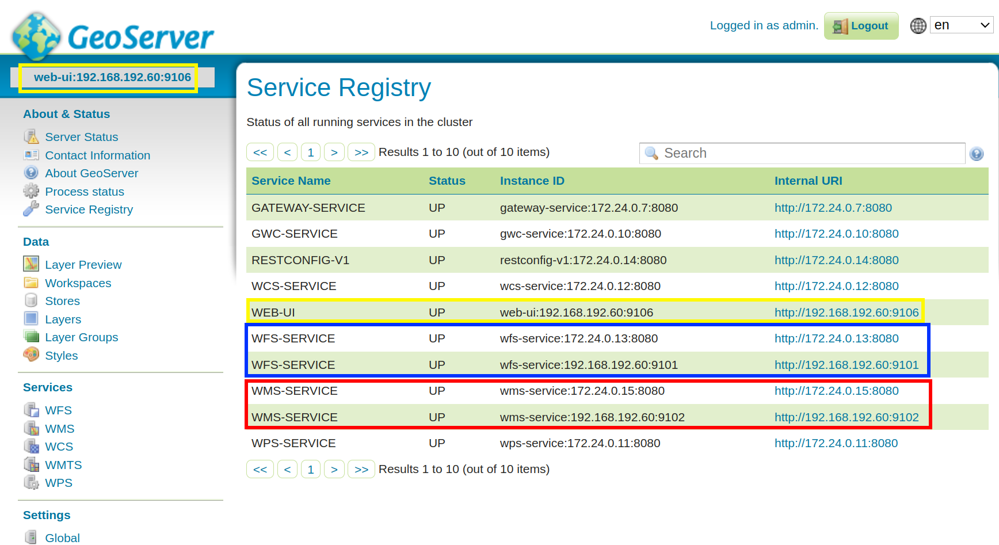
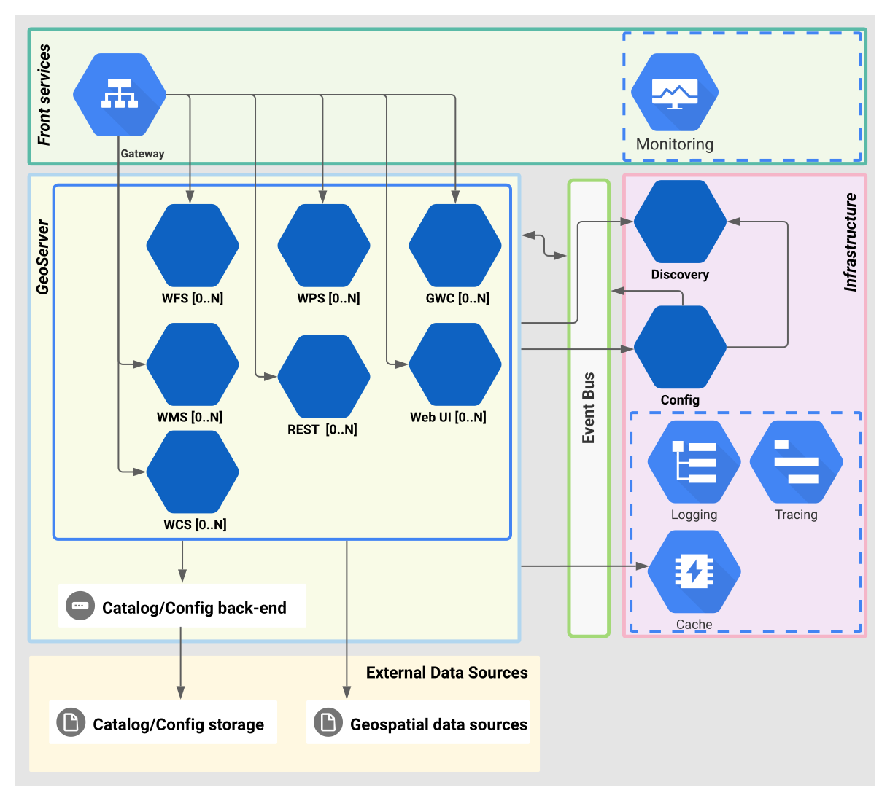
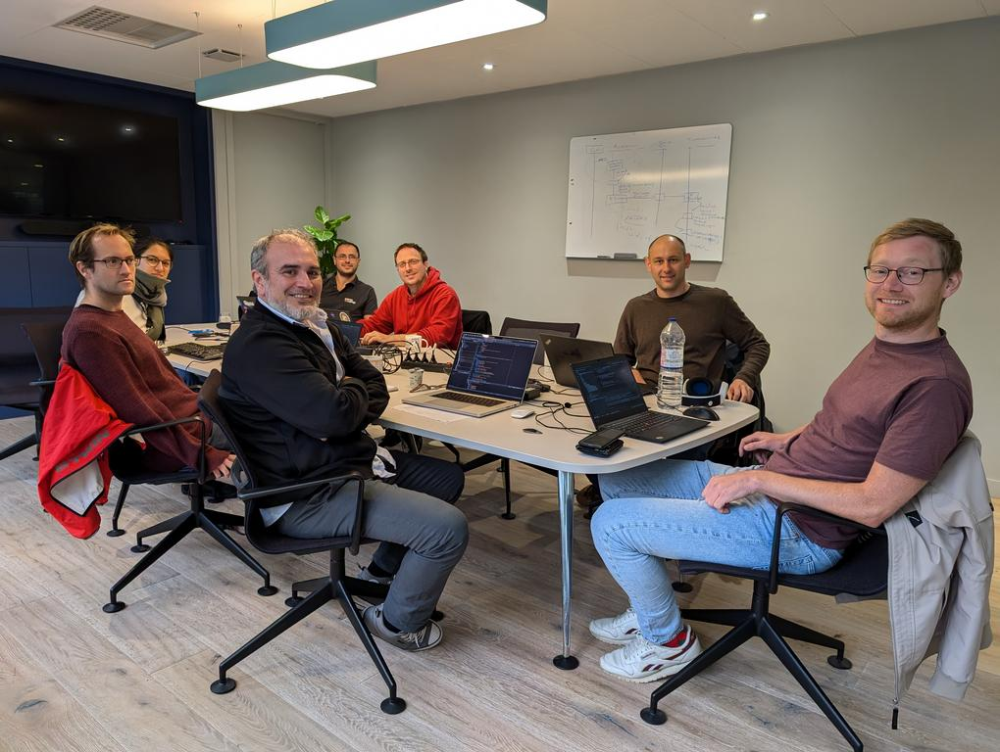

Was ist GeoServer Cloud?
Was ist GeoServer Cloud?

Was löst GeoServer Cloud?
GeoServer Cloud Architektur

CodeSprint (Oktober 2024)


Erster GeoServer Cloud CodeSprint bei Camptocamp in Chambéry, Frankreich